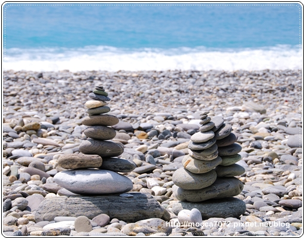
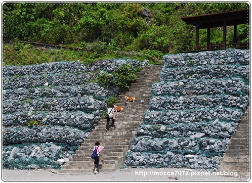
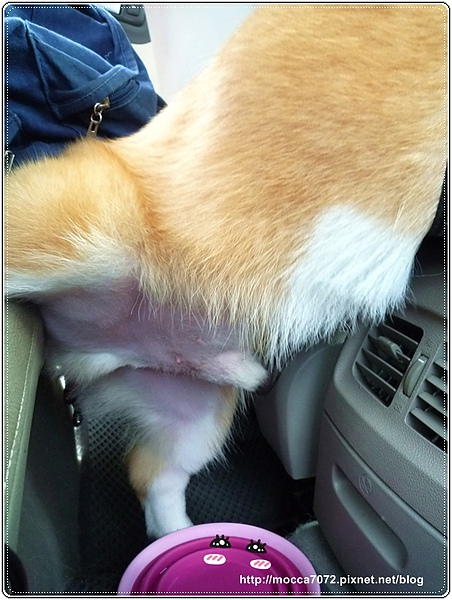
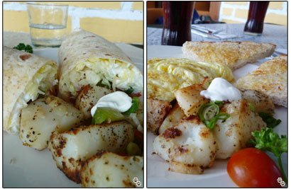
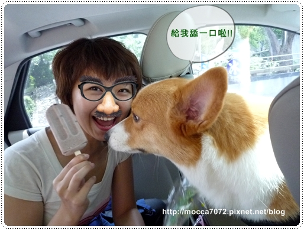
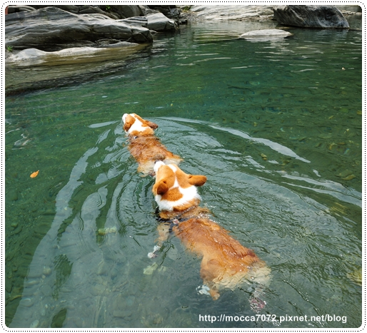
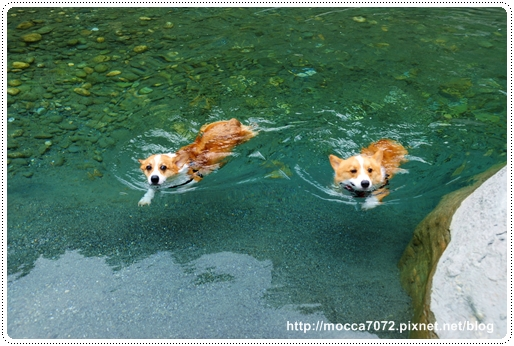
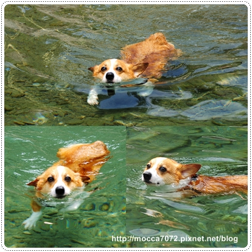
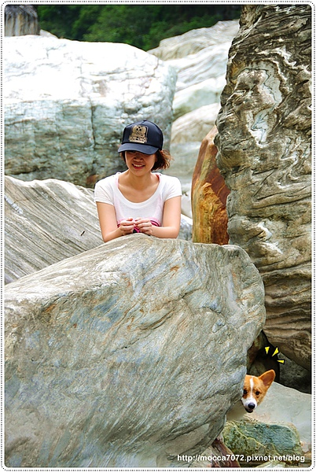
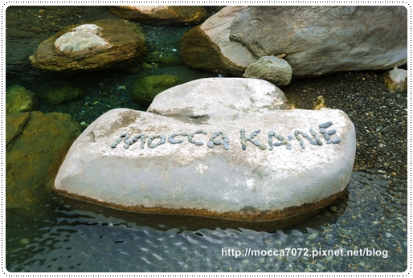

各位捧油，我們天兵家族又偷偷跑去花蓮玩啦！
因為拔拔不方便請假，所以我很懷著很愧疚的心情 (真的有XD)
帶著拔拔的信用卡、金融卡 ＆ 摩卡卡一起出發啦！
因為只有我帶卡卡，為了方便拍照只帶個小DC
所以照片顏色不飽合就是我拍的，漂亮的就是借卡內拔拍的來用嘍！
(應該不難分辨啦!XDDD)
首站到達著名的景點－清水斷崖
那天太陽不夠大，所以海水漸層不夠明顯！
為了拍照，我做了不好的示範，對不起歐！(跪)
但我很乖拍完照馬上就下來惹！
因為我也好怕摩卡卡跳跳跳的把我撞下去！哈哈哈
兩個矮冬瓜根本也不知上面有什麼，也吵著要上去！
還好他們腿短沒辦法跳上去～哈哈！不然真的很危險
謝謝卡內拔麻一路很照顧我們母子吶！
幫我們拍很多合照，要我們帶回去跟摩卡拔炫耀！XDDD
開王笑的啦！我們沒有一刻有忘記辛苦工作的拔拔滴～
才第一站摩卡卡就超嗨的，在柏油路狂奔，居然還讓我拍到他飛起來！
就知道這倆個小傢伙有多開心了！

前往下一站前由卡內麻接棒當駕駛，因為卡內拔要賺旅費先！哈哈
而且我也有自告奮勇說我也可以幫忙開車，但好像大家都裝沒聽到是唄～

前往沙灘去拍照的路上，卡ㄋㄟ不時回頭看他拔拔有沒有跟上
如果是摩卡卡歐，我想他應該滿腦子只會想著：我要跟緊卡ㄋㄟ吧！= =

來這拍照卡內麻說一定要來堆個石頭留念一下
但那裡完全是曝晒在陽光底下，熱屎人惹！

結果卡內麻速度有夠快，早早堆完早早就去拍照看海了
留下我獨自一人好ㄑ涼啊......還被兩隻散步的小狗取笑！

排得慢就算了，就在快完成的同時居然發生倒塌意外！u%$#@#....
天兵事件記上一筆 

終於完成啦！卡內拔拍的好有fu歐！

也差不多快被晒成人乾狗乾了，爬上長長的階梯回車上吹冷氣去！
才第2站體力就透支~哈哈哈

你們看看摩卡卡這小子散熱的方式有多欠揍，把小GG擋在冷氣口！
風經過你的小GG再吹到我們臉上很噁心耶！
天兵事件記上第２筆

接著我們來到蠻多人介紹的CONUNTRY MOTHER'S
這裡的餐點屬於美式早餐那類，那天平日去沒什麼人！

左邊是卡內麻的軟塔可餅，右邊是我的加拿大蛋捲

還有兩枚可愛的小傢伙，剛好被我拍笑嘻嘻的樣！卡哇衣吶～

吃完午餐我們要辦入山證前往>>慕谷慕魚啦！
卡內麻超快速的填完資料，因為沒太多人要辦理所以速度也挺快的！

進入前卡內拔說這間龍澗冰品很有名！派我去買冰 XD
口味很多種，我選了店員推薦的紅豆牛奶冰，卡內拔選了百香果口味

好不好吃看看我這孫叔叔的表情就知道啦！
其實跟義美的紅豆牛奶很像啦～噗！
天氣熱融超快的，只好讓摩卡卡幫忙一下，讓他賺到！

開到最上方找到可以下水的點我們玩水去啦！
溪水超清澈的，海王子卡ㄋㄟ早就迫不及待衝下去了
對玩水好感度持平的摩卡卡果然還是先在岸上觀望先～

好不容易用魚魚這招騙下水之後，
摩卡卡居然就一路一直跟著副會長耶～哈哈哈
你是想要氣屎卡ㄋㄟ歐，連玩水都要假你攬條條！

這裡水真的乾淨，兩隻小腿手在水裡撥動都看的好清楚～
看卡ㄋㄟ游泳超輕鬆不費力的！

不虧是海王子表情很放鬆，下巴浮貼在水面
而且屁股翹高高就不用花太多力氣划水！

卡卡一開始下水都會很努力拚命的划，很怕滅頂就是了！哈哈
但表情不錯蠻悠哉的嘛！
去墾丁先過水過有差～喚起去年的記憶！XD

只要到戶外玩耍，摩卡卡充滿生物學家的滿腔熱血又來啦！
看到蝴蝶就要追～很怕那天他嘴裡叼隻蝶回來孝敬我！

每次都醬，只要不叫他下水他一定在岸上亂跑！
厲害的是他很能在那都是石頭堆的岸上跳上跳下，亂可怕的！

厚～一下子又跑去嚕沙，
不過我沒制止他，至少嚕沙比較不會有蟲蟲上身～隨你吧！

好一個髒小狗，但我也覺得出來玩就是要弄的髒兮兮啊！
會有一種玩得很夠本的感覺～ㄎㄎㄎ

摩卡卡這小子一直在石頭上納涼的樣子連卡ㄋㄟ都看不下企惹！XD
跑到軍曹旁邊怒斥了幾句~超威的！

軍曹被罵了以後果真聽話下水練習去啦！妙呆了～
我們娘砲軍團是很尊敬長官滴～
而且卡卡經過特訓屁屁也會翹高高，游的愈來愈好嘍！

這張卡卡好可愛，好像在跟攝影師玩躲貓貓一樣！
其實我們是在等卡內麻修復被卡ㄋㄟ不小心踩亂的字母～

鏘鏘鏘～鏘！Ｍｏｃｃａ ＆ Ｋａｎｅ到此一遊！

話說最後一次去花蓮已經是小時候的事 了，也沒什麼印象！
這次跟卡內家來，到那都覺得有趣～尤其是慕谷慕魚～我超愛！
(未完待續)